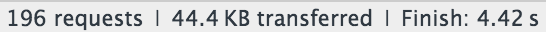

JSPM

jspm.io
(Scala / TypeScript) chez Captain Dash
Les balises script...
<script src="vendor/moment.js"></script>
<script src="vendor/lodash.js"></script>
<script src="vendor/jquery.js"></script>
<script src="vendor/jquery-ui.js"></script>
<script src="vendor/angular.js"></script>
<script src="src/app.js"></script>
...c'est so 2010
Les problèmes de l'approche traditionnelle
- Les variables globales (
_,$,moment, etc.) - Les conflits de versions
- L'ordre d'exécution
- Les dépendances transitives
Exemple :

Les modules en JS
AMD
define(function (require, exports) {
var _ = require('lodash');
exports.add = function add(a, b) {
return _.add(a, b);
};
});
Common JS
var _ = require('lodash');
module.exports = {
add: function add(a, b) {
return _.add(a, b);
};
}
Les modules ES6
//MyMath.js
import _ from 'lodash';
export default function add(a, b) {
return _.add(a, b);
}
export function multiply(a, b) {
return a * b;
}
import myAdd from './MyMath';
import {multiply} from './MyMath';
myAdd(1, 2) //3
multiply(2, 3) //6
System JS
- Module Loader
JSPM
- Package Manager
Utiliser JSPM
Installer JSPM
npm install jspm@beta --save-dev
Initialiser le projet
jspm init
---
- Init Mode (Quick, Standard, Custom) [Quick]: Quick
- Local package name (recommended, optional): clock-component
- package.json directories.lib [src]: src
- System.config browser baseURL (optional):
- System.config local package main [clock-component.js]: index.ts
- System.config transpiler (Babel, Traceur, TypeScript, None) [babel]: typescriptjspm.browser.js
SystemJS.config({
baseURL: "/",
paths: {
"github:*": "jspm_packages/github/*",
"npm:*": "jspm_packages/npm/*",
"clock-component/": "src/"
}
});jspm.config.js
SystemJS.config({
transpiler: "plugin-typescript",
packages: {
"clock-component": {
"format": "esm",
"main": "index.ts",
"meta": {
"*.ts": {
"loader": "plugin-typescript"
}
}
}
}
});Installer des dépendances
L'installation des dépendances peut être faite via :
- registry
- github
- npm
jspm install angular
jspm install github:username/repo
jspm install npm:moment
Configurer des dépendances
Principales propriétés qui peuvent être surchargées :
- main
- format
jspm install github:user/repo -o "{ main: 'path/to/main' }"
Utiliser SystemJS
index.html
<script src="./jspm_packages/system.js"></script>
<script src="./jspm.browser.js"></script>
<script src="./jspm.config.js"></script>
<script>System.import('bootstrap.ts');</script>
bootstrap.ts
// import dependency
import moment from 'moment';
// import component
import ClockComponent from 'clock-component';
// or
import ClockComponent from './src/index.ts';
const current = moment();
const component = ClockComponent();
component.render();
Transpilation
- Babel par défaut
- Support de traceur et TypeScript*
- Transpilation au runtime
Performances
- Éviter la transpilation au runtime (gulp, npm scripts)
- Créer un bundle avec les dépendances externes
jspm bundle angular + moment dependencies.bundle.js --inject
Performances
Avant :

Après :
Production
Création d'un bundle auto exécutable (via SystemJS Builder) :
jspm bundle-sfx src/index.js dist/app.bundle.js
Options supportées :
- minification
- source maps
- format
- runtime
Plugins
De nombreux plugins disponibles CSS, JSON...
jspm install css
Usage :
import './style.css!'
Ce qui se passe en réalité :
<head>
<title>Document</title>
<link type="text/css" rel="stylesheet" href="style.css">
</head>
La concurrence - Webpack
- Bundle uniquement
- Support d'autres format que JavaScript
- Pas de package manager